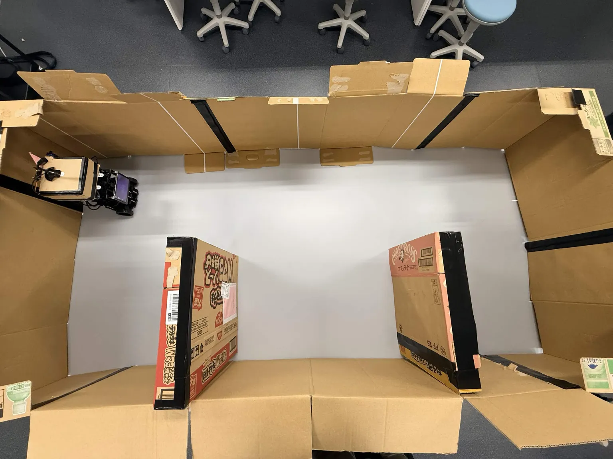
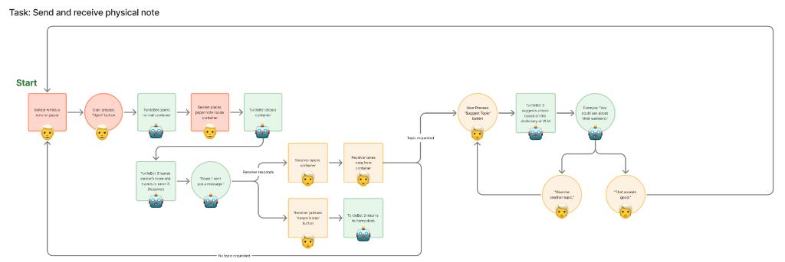
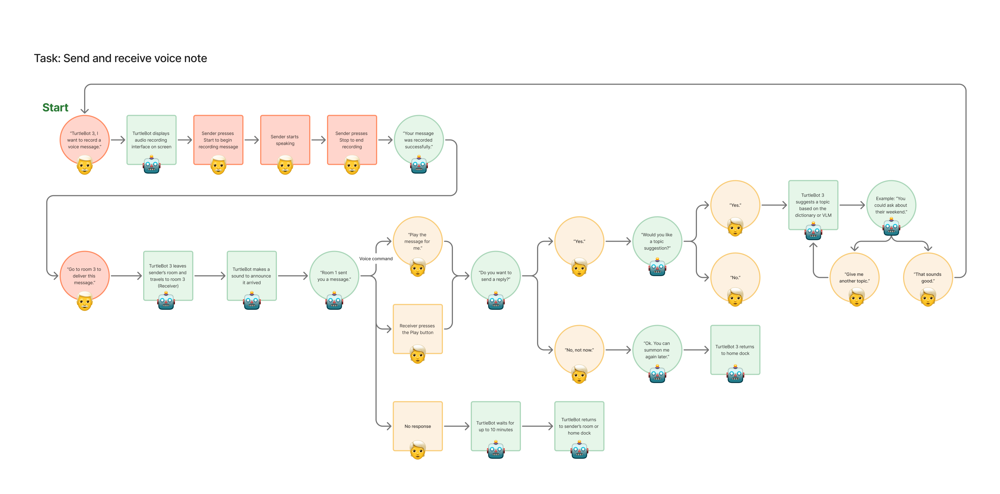

A resident summons the courier, places a handwritten note or speaks a voice message, and watches the robot navigate. The robot actively communicates its status at every stage.

Hardware Anatomy
Outfitted for Delivery & Human-Robot Interaction
A TurtleBot3 Burger platform enhanced with an automated servo mail compartment, onboard Raspberry Pi 4B, Arduino Uno R3 actuator bridge, 360° LiDAR, and USB audio suite.
Perspective View: Exterior Mail Hatch & LiDAR
Shows the compact TurtleBot3 Burger structure with top-mounted 360° LiDAR and custom 3D-printed mail capsule.
Dual SG90 MicroServos (/servo)
Controlled via Arduino Uno R3 to automatically swing open the cargo hatch upon arrival and securely lock it during corridor transit.
Audio I/O & Expressive Signals (/audio_*)
USB microphone captures voice postcards; onboard speaker plays friendly arrival chimes.
Message types
Say it your way
Users pick whatever feels natural: a handwritten note or a recorded voice message.
✉
Physical note
Write by hand, place it in the compartment, and watch the robot carry it down the hall.
🎙
Voice postcard
Record a brief, confidential audio message. Skip the blank-page pressure, and just speak and send.
Interaction flow
Task Flow: Send and Receive Physical Note
From the moment a resident decides to write, to the moment the receiver holds the note.
Interactive Step Walkthrough
1
Write Note
2
Press Open
3
Hatch Opens
4
Load & Close
5
Corridor Nav
6
Arrival Chime
7
Retrieve Note
8
AI Suggestion
Step 1: Sender writes a note on paper
Sender composes a handwritten greeting, drawing, or origami note in the comfort of their room without tech stress.
TurtleBot3 StateStandby at bedside · Ready for user summon command

Interaction flow
Task Flow: Send and Receive Voice Note
Record a short message, no writing required. The robot carries the audio and plays it on arrival.
Interactive Voice Walkthrough
1
Record Tap
2
UI Prompt
3
Speak Msg
4
Stop & Save
5
Select Room
6
Corridor Transit
7
Arrival Chime
8
Playback & Reply
Step 1: User presses record button on screen
The resident taps the large, high-contrast microphone icon or issues a simple voice wake command.
TurtleBot3 State/ui: Displays audio recording interface with animated mic pulse

User journey map
The emotional arc, phase by phase
Goals, actions, thoughts, and pain points across all six stages, from the moment a resident decides to reach out, to the reply that keeps the connection going.
1. Initiate Interaction
2. Create Message
3. Load Message
4. Deliver Message
5. Receive Message
6. Reply & Deepen
Goals
Reach out to a neighbor without the physical strain or risk of walking over
Express something meaningful without blank-page anxiety or fatigue
Successfully hand off the note to the robot's motorized compartment
Trust the delivery process executed autonomously by TurtleBot
Be pleasantly surprised by an unexpected neighbor connection
Continue and deepen the social connection effortlessly
Actions
Summon robot via bedside button or voice
Select recipient room on touch UI
Write note, draw sketch, or record voice postcard
Optional: Play pre-recorded TTS audio topic suggestions (.wav)
Press 'Open' button
Place note into open capsule
Servo auto-closes securely
Watch robot navigate corridor
Robot's LED and screen indicate delivery progress
Hear arrival chime melody
Open capsule or press Play on UI
Read note or listen to voice audio
Decide to reply immediately or later
Tap 'Suggest Topic' for reply prompts
Or send robot back to dock
Thoughts
I want to tell Walter about my garden tomatoes, but I don't want to intrude if he's resting.
What if my handwriting is messy? The voice option is so reassuring!
The hatch opened right up! It feels like a high-tech private mailbox.
Off it goes down the hall. I hope it brings a smile to Walter before lunch.
Oh, a chime! Someone thought of me today!
I love this idea! The robot even gave me a topic to reply with!
Pain points
Uncertainty about recipient availability (Resolved by asynchronous delivery)
Blank-page anxiety and hand tremor (Resolved by pre-recorded TTS audio prompts + voice mode)
Motor dexterity opening small latch (Resolved by motorized dual SG90 servo hatch)
Delivery anxiety during transit (Resolved by real-time status LED and chime)
Doorway arrival confirmation (Addressed in Future Work with closed-loop audio greeting)
Pressure to reciprocate (Resolved by zero-obligation 'Return Home' button)
Emotions
😐Hopeful anticipation
😊Creative expression
😄Empowered & excited
😌Peaceful confidence
🥰Deep joy & delight
💖Connected & valued
Design Evolution
From Initial Open Questions to Verified Prototype
1. Resolved Open Questions from Planning
Our planning document explored conversation end states and trigger modes, resolved through user-initiated dock return and accessible UI triggers.